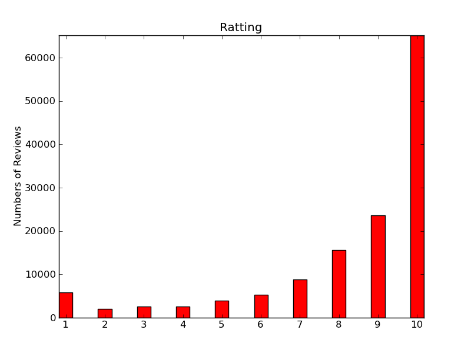
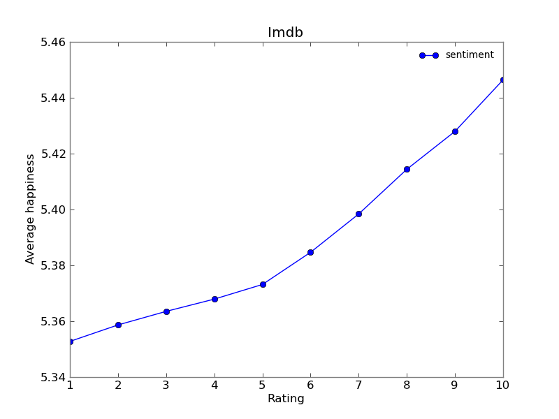
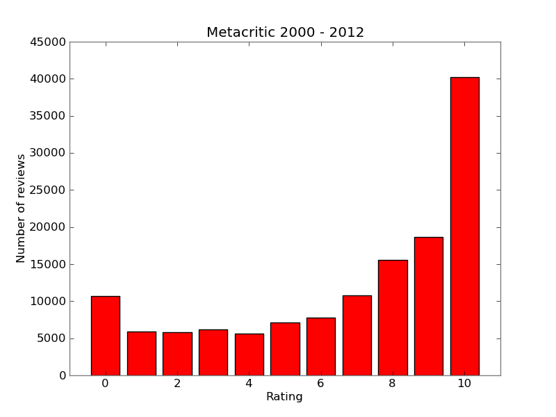
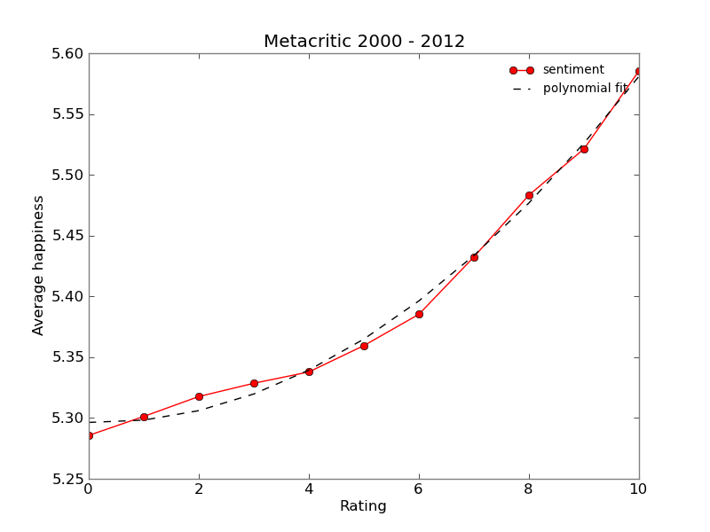
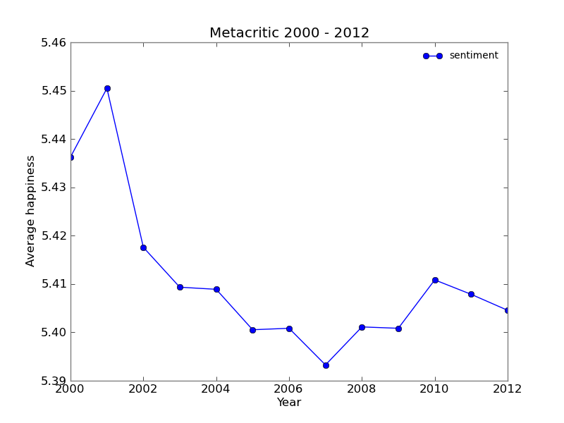
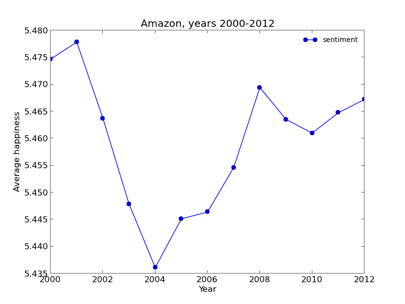
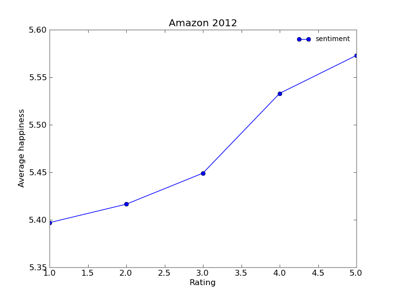
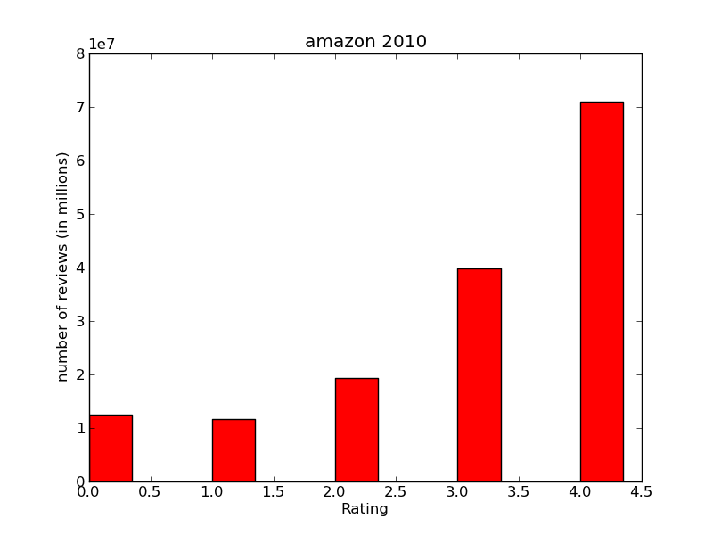
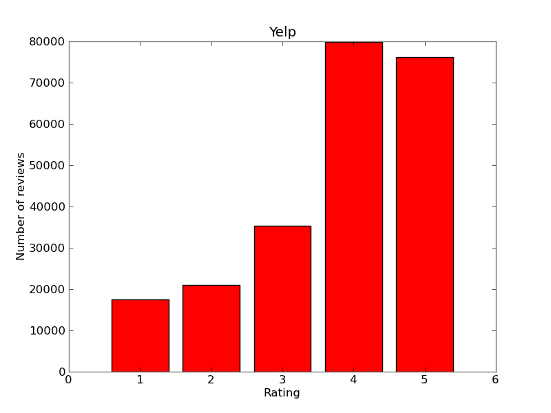
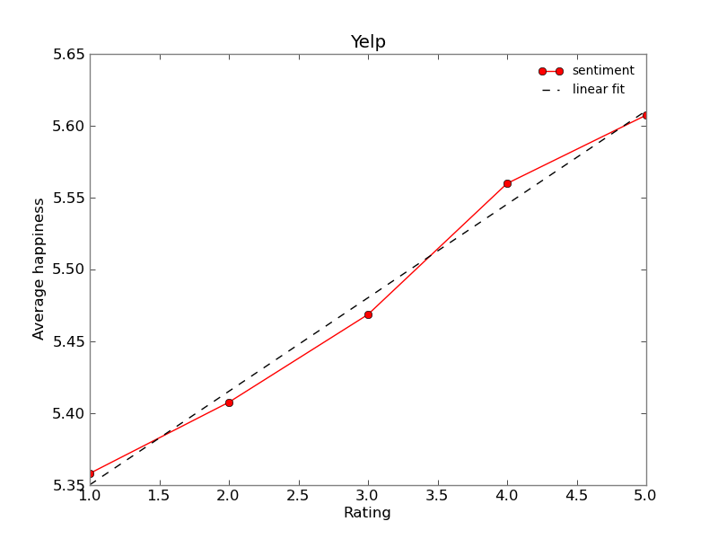

Sentiment Analysis.
Main idea
The main idea was to collect a large data set that contains user/customer reviews and the corresponding ratings and then to calculate the sentiment that each review produces and see if there is any particular relation between them. Furthermore, we did this using different data sources in order to see if the relation between the sentiment and rating holds for all the diffent data sources. Additionally we can observe the distribution of ratings on different websites and see how average sentiment changes over time
What is sentiment analysis?a brief introduction
Sentiment analysis allows us to compute the general mood of a given text. We use the LabMT dataset which pairs words with the rating of how happy the word is, on the scale from 1 to 10. This data was obtained in large user surveys. To find the sentiment we analyse each word of a review separately and compute the average happiness. This method does not take compound phrases or irony into account. However if a large enough dataset is used the results are satisfactory.
Data sources
The data was collected from the following web sites:
- www.imdb.com:
website providing a wealth of information about movies. Users of the websites can review the movies, we chose to extract this data from top 250 movie list - www.amazon.com: e-commerce website with different kinds of products. We choose to collect data about books. We chose reviews from top 100 bestselling books for each year from 2000 to 2012.
- www.metacritic.com: main purpose of this site is the aggregation of ratings given by critics for games, movies and TV shows. However each entry can also contain reviews made by website's users. We collected the user reviews from movies released in the 2000-2012 period.
Technique that we used to extract the data
In order to retrieve the review text and ratings we used HTTP GET requests(using the appropriate Python function) sent to appropriate website. We then obtain the html file that a browser of a normal user would see. We extract all the necessary data from html files using Beautiful Soup library. It is a Python library that allows you to parse html data in an easy way.
Graphs/outcomes
IMDB graphs
The above graph show us how many users voted for each rating.
The result of the graph was the expected one, because we have extracted data from 250 top list movies. As a result, the vast majority of votes comes from high rates (like 8,9,10). Furthermore, we can say that few people choose to vote between 2-5. In addition it seems that if someone is going to vote in a negative way propably they are going to vote 1 i.e. they used to vote the lowest ratting.
The above graph show us the relation between the sentiment and the rating. The sentiment was calculated from almost 150000 reviews. We can see from the graph that as the sentiment rises the same happens for the rating.
Metacritic graphs
Most ratings are very positive. With there being a sharp jump from 9 to 10. Number of smaller ratings gradually decay until a spike is seen at 0. This is another example of users favouring extreme ratings.
We can observe that sentiment is positively correlated with the rating. In this case a parabola was fitted to the data with good results.
We tried plotting the average sentiment in each year. It is hard to find a pattern in this data with the exception of the spike in years 2000 and 2001. Metacritic was launched in january of 2001. Only fans would go back to older movies to rate them, which is one explanation of higher sentiment in year 2000. In the year 2001 more enthusiastic users could have joined the website in its begginings.
Amazon graphs
The results found while analysing the Amazon data set are very similar to the previous ones.
 
Yelp graphs
 Results obtained from yelp dataset are quite different from the previous ones. There is no big spike in the amount of extreme ratings. The relation between rating and sentiment seems to be linear, unlike the metacritic reviews. This seems to suggest that yelp users use the star ratings in a more objective manner.
Conclusions
In conclusion, we have found the positive correlation between sentiment and rating, as expected. In addition analysing rating frequencies gives as some additional insights.
Go back to the list of contents